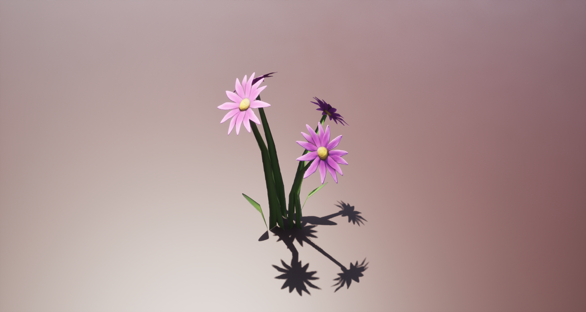
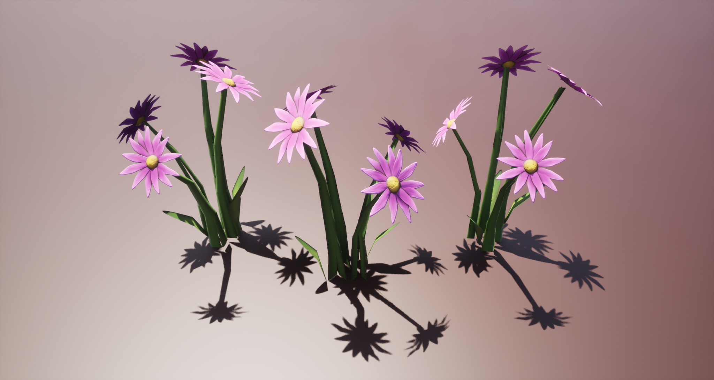
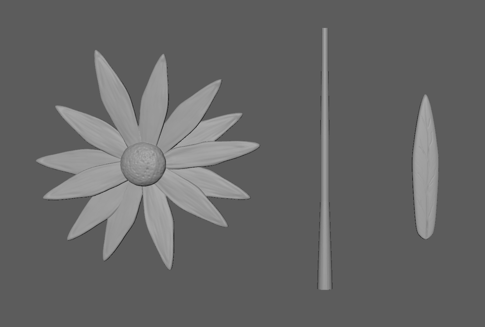
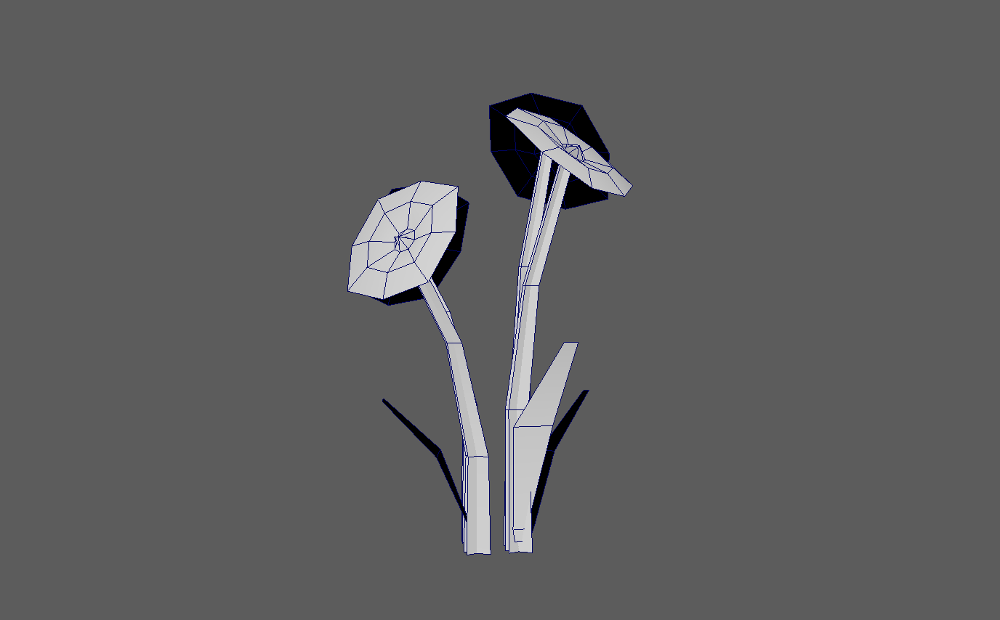
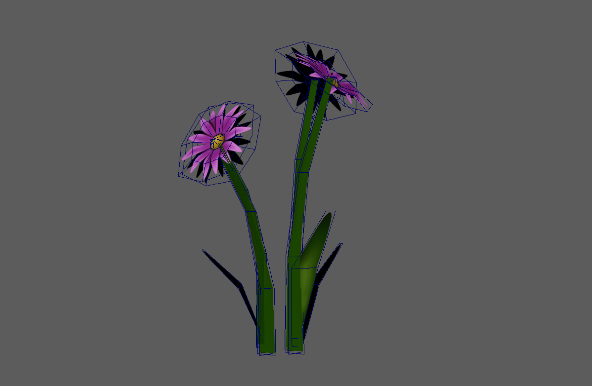

3D Modeling
Stylized 3D asset studies, from sculpted forms to game-ready meshes and finished renders.
Stylized flowers — asset breakdown
These flowers explore organic silhouettes, petal variation, and how a detailed sculpt can be translated into a simpler textured asset. The images below show my finished presentation, sculpt, and low-poly geometry.
- Discipline
- 3D modeling · stylized environment assets
- Workflow
- High-poly sculpt → low-poly model → textured mesh → beauty renders
- Software
- Maya · ZBrush (modeling toolset)
Final renders


Modeling process



Design decisions
I focused on keeping the silhouette readable at a distance while using the petal shapes, color variation, and grouped stems to create a soft, stylized look. Comparing the sculpt and wireframe helps show which details were preserved in the simplified model.
Takeaway
This breakdown illustrates the tradeoff between detailed sculpted forms and simpler geometry that can be reused in a real-time environment. It is a visual process study; polygon counts, time spent, and performance measurements are not documented here.
Other modeling studies
Tree-inspired bow and arrow
A stylized prop study with finished beauty renders, high- and low-poly model views, UV layouts, and visual reference.
Tamagotchi
A small hard-surface prop exercise using simple, recognizable forms.